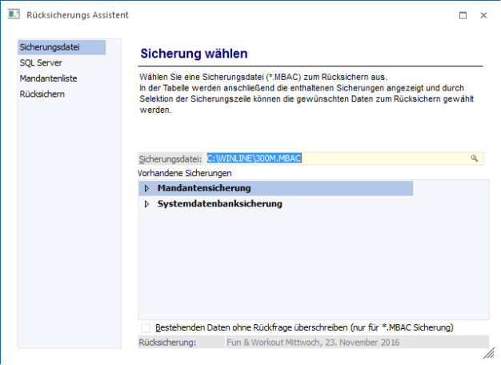
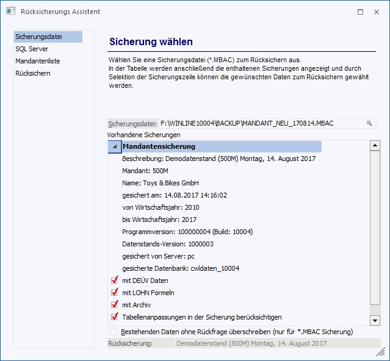
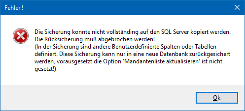

Im ersten Schritt muss die Sicherungsdatei gewählt werden, aus der ein Datenstand rückgesichert werden soll. Standardmäßig wird die zuletzt verwendete Sicherungsdatei vorgeschlagen. Durch Drücken der F9-Taste kann nach allen bestehenden Sicherungsdateien (*.MBAC oder *.BAK) gesucht werden. Ebenso kann eine Sicherungsdatei mittels Drag & Drop eingefügt werden.

Nach Auswahl der gewünschten Sicherungsdatei werden in der Tabelle alle Sicherungseinträge angezeigt, wobei es folgende Möglichkeiten gibt:
ü Mandantensicherung
Beinhaltet
die Sicherung eines Datenstandes
ü
Systemdatenbanksicherung
Beinhaltet die Sicherung von
Systemeinstellungen
ü Systemdateisicherung
Beinhaltet
die Sicherung von Systemdateien
Durch einen Klick auf das + der vorhandenen Sicherung wird ersichtlich, wann und mit welchen Einstellungen die entsprechende Sicherung durchgeführt wurde und welche Daten enthalten sind

Sind mehrere Einträge in der Liste enthalten, muss der gewünschte Eintrag ausgewählt werden. Die Auswahl wird auch unter der Tabelle (Rücksicherung) angezeigt.
Existieren in der Mandantensicherung auch mandantenunabhängige Daten (LOHN-Formeln, DEÜV-Daten), kann durch Anhaken der jeweiligen Checkbox entschieden werden, ob die LOHN-Formeln, DEÜV-Daten rückgesichert werden sollen.
Gibt es im System keine Benutzeranpassungen in den Tabellen, dafür jedoch in der Sicherung, so gibt es eine Zeile mit einer Checkbox "Tabellenanpassungen in der Sicherung berücksichtigen". Diese Checkbox ist im Standard aktiviert. Wird versucht, die Sicherung mit aktivierter Checkbox zurückzusichern, so wird es zu einem Fehler kommen.

Wird die Checkbox deaktiviert, werden die Daten in den benutzerdefinierten Spalten/Tabellen ignoriert und nur die Daten der Standardspalten werden zurückgesichert.
Gibt es im System Benutzeranpassungen in den Tabellen, so spielt es bei der Sicherung keine Rolle, ob dort Benutzeranpassungen existieren: Es ist eine Zeile mit der Checkbox "Tabellenanpassungen müssen mit denen in der Sicherung übereinstimmen" sichtbar. Diese Checkbox ist im Standard angehakt. Wenn versucht wird die Sicherung so zurückzusichern, wird dies nur dann funktionieren, wenn der Aufbau der Benutzeranpassungen exakt zum aktuellen System passt. Passen Sicherung und System nicht zusammen, wird eine Fehlermeldung ausgegeben.
Wird die Checkbox deaktiviert, dann werden die Daten in den benutzerdefinierten Spalten/Tabellen ignoriert und nur die Daten der Standardspalten zurückgesichert.
Ø Bestehenden Daten ohne Rückfrage überschreiben (nur für *.MBAC Sicherung)
Ist diese Checkbox aktiviert, dann werden die bestehenden Daten überschrieben, ohne dass das Programm vorher noch eine Warnung bringt.
Wurde eine Datenbank-Sicherung (*.BAK) ausgewählt, wird nur die in der Sicherung enthaltene Datenbank angezeigt.
Wurde der gewünschte Eintrag gewählt, kann man durch Anklicken des VOR-Buttons in das nächste Fenster wechseln.